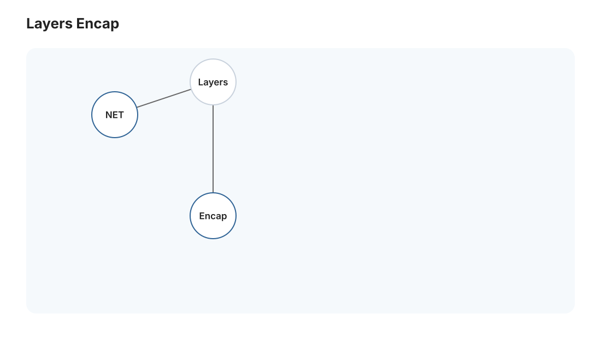
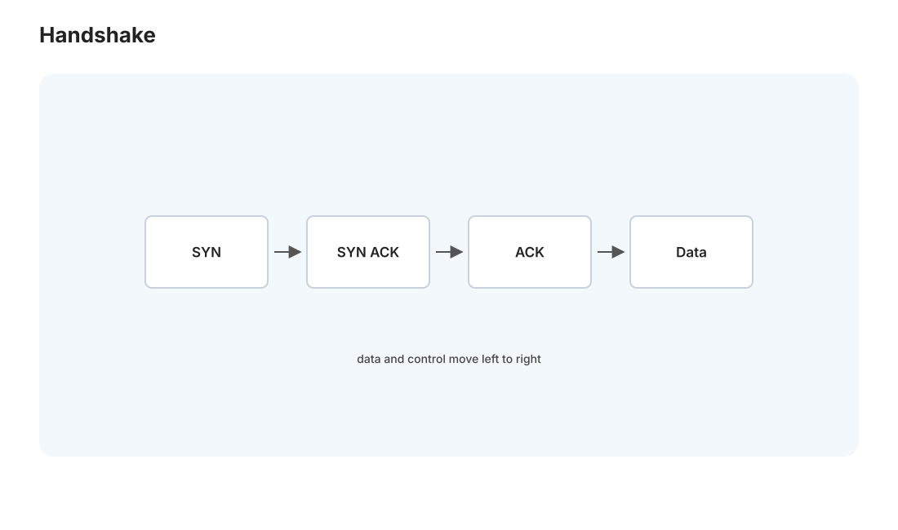
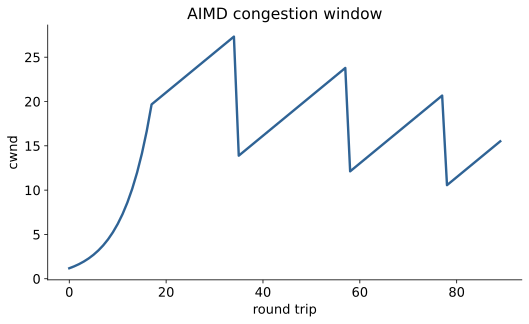

本页目录
网络 I · 分层、TCP/IP 与拥塞控制
对标：Stanford CS144 / Kurose–Ross 自顶向下 ｜ 前置：408 网络的概念框架、os 线（socket 是系统调用） 网络是"让全世界的机器可靠通信"的工程奇迹，而它的核心设计哲学只有一个词——分层。这一页讲清 TCP/IP 四层各干什么、为什么这样切，然后深入 TCP 的两大发明：在不可靠的网络上造出可靠传输（确认 + 重传 + 滑动窗口）与拥塞控制（几十亿设备共享带宽却不崩溃的分布式算法）。
学习层：一个丢包，为什么不会让字节流失序？
具体谜题：序号 2 消失之后，ACK 应该说什么？
发送端一次允许发送序号 0–5，接收端按序交付。若数据包 2 丢失，而 3、4、5 先到达，接收端是确认“我收到了 5”、重复确认 2，还是立刻交付 3–5？三种回答对应三种不同的可靠性设计；先写出你认为 TCP 应该做什么。
最小心智模型：四个边界和一个滑动窗口
IP 只负责尽力转发；TCP 在其上维护发送序号、接收序号、确认、重传计时器和窗口。对接收端而言，序号是字节流的位置，不是数据包的身份；乱序段可以暂存，但只有连续前缀能推进交付边界。
形式机制与不变量
若 \(ACK=k\)，累计确认表示所有序号小于 \(k\) 的字节已按序收到。发送边界满足 \(\mathrm{snd.una}\le\mathrm{snd.nxt}\le\mathrm{snd.una}+\min(\mathrm{rwnd},\mathrm{cwnd})\)；只有右边界仍有空间时（\(\mathrm{snd.nxt}<\mathrm{snd.una}+\min(\mathrm{rwnd},\mathrm{cwnd})\)）才能继续发送。接收端的交付不变量是不会跳过缺口。Reno 的典型规则是无拥塞时 \(cwnd\leftarrow cwnd+1/cwnd\)，检测到丢包时降低窗口，体现 AIMD 而不是“网络越快越无限发送”。
反例与失效边界
累计 ACK 不是全局顺序的证明：接收端可能已缓存乱序段；三个重复 ACK 的快速重传依赖具体实现与时序，超时重传仍是另一条路径。TCP 的可靠性也不保证应用语义上的幂等；UDP 没有这些机制，拥塞控制更可能由应用自行承担。
迁移任务：从 trace 到可验收的传输实现
在 P05 迷你 TCP 中为每个状态写出 snd.una、snd.nxt、重传队列和 ACK 处理的不变量，再把丢包 trace 改成乱序加重复包。L12 HTTP 服务器建立在可靠字节流之上，但它不能替 TCP 隐藏超时、拥塞和连接生命周期；两者的分层接口要分别验收。
交互实验：滑动窗口与累计 ACK 重放
无 JavaScript 时的静态读法：默认窗口含序号 0–5，序号 2 丢失。接收 0 后发送 ACK=1，接收 1 后 ACK=2；3、4、5 虽到达却只能各产生重复 ACK=2，不能越过缺口交付。三个重复 ACK 触发快速重传 2，随后 ACK=6，发送端才继续推进；若改成超时模型，拥塞窗口会更激烈地下降。状态中的窗口边界是字节/序号账本，不是带宽测量。
| 事件 | 接收端动作 | ACK | 发送端结论 |
|---|---|---|---|
| 收到 0 | 交付 0 | 1 | 确认前缀 [0] |
| 收到 1 | 交付 1 | 2 | 缺口为 2 |
| 收到 3/4/5 | 缓存乱序 | 2、2、2 | 三次重复 ACK |
| 重传 2 | 交付 2–5 | 6 | 窗口前沿推进 |
1. 为什么分层：对抗复杂度的经典范式

网络要处理的事太多——电信号、路由、丢包、应用协议……分层把它们切成独立的关注点，每层只依赖下层的抽象服务：
| 层 | 职责 | 地址/单位 | 代表协议 |
|---|---|---|---|
| 应用层 | 应用逻辑 | — | HTTP、DNS、SMTP |
| 传输层 | 进程到进程、可靠性 | 端口 | TCP、UDP |
| 网络层 | 主机到主机、路由 | IP 地址 | IP |
| 链路层 | 相邻节点、物理传输 | MAC | 以太网、WiFi |
核心思想——封装：应用数据下沉时，每层加自己的头部（像套信封）：[以太网头[IP头[TCP头[HTTP数据]]]]。接收方逐层拆封。每层只看自己的头、不管上层内容——这个"关注点分离"让 IP 不用懂 HTTP、以太网不用懂 IP，各层能独立演进（IPv4→IPv6 不影响上层）。分层是计算机科学对抗复杂度最成功的一次实践，理解它比记住任何协议细节都重要。
端到端原则：复杂功能（可靠性、加密）尽量放在端（主机），网络核心保持简单（只管尽力转发）。这是互联网可扩展的哲学根基——"聪明的边缘、笨的核心"。
2. IP 与路由：尽力而为的底座
IP 层只承诺"尽力而为"——尽力把包送到，但可能丢失、乱序、重复、延迟。它不保证任何东西。为什么这么弱？因为端到端原则：可靠性交给端上的 TCP。IP 的工作是路由——每个路由器看目标 IP、查路由表、转发到下一跳。路由表怎么来的是路由协议（BGP 连接全球自治域、OSPF 域内）的事。理解"IP 不可靠"是理解 TCP 全部复杂性的前提：TCP 的每个机制都在弥补 IP 的某个不保证。
3. TCP：在不可靠之上造可靠

TCP 给应用的承诺：可靠、有序的字节流。它靠三招在不可靠的 IP 上实现：
- 确认与重传（ARQ）：每个字节有序号，接收方回确认（ACK）；发送方超时没收到 ACK 就重传。"没确认就重发"是可靠性的全部秘密。超时时间靠 RTT 估计动态调整。
- 滑动窗口：不能发一个等一个（太慢），也不能一次全发（淹没接收方）。发送方维护一个"窗口"——允许有若干未确认的包在途，ACK 回来窗口就滑动。窗口大小 = 流量控制（接收方通告它的缓冲余量，防发太快）。
- 连接管理：三次握手（SYN → SYN-ACK → ACK）建立连接、同步初始序号；四次挥手关闭。三次握手是"双方都确认对方能收发"的最小回合数。
这就是 [大 Project P05 迷你 TCP] 的核心：在 UDP（不可靠）之上，用序号 + ACK + 滑动窗口 + 超时重传，亲手实现可靠传输——做完这个，"可靠传输"从名词变成你写过的代码。
4. 拥塞控制：几十亿设备的分布式协作

流量控制防的是"发送方淹没接收方"；拥塞控制防的是"大家一起淹没网络中间的路由器"。这是 TCP 最深刻的发明——没有中央协调，每个连接各自调整，却涌现出全局稳定的带宽分配：
- 信号：TCP 把丢包当作拥塞信号（路由器缓冲满了才丢包）。
- AIMD（加性增、乘性减）：不丢包时窗口线性增大（试探更多带宽）；一丢包就窗口减半（快速退让）。这个"缓慢试探、迅速退让"的锯齿形，让众多连接公平且稳定地共享带宽——是一个优美的分布式算法。
- 慢启动：连接初期窗口指数增长快速探到可用带宽，到阈值转 AIMD。
- 现代演进：CUBIC（Linux 默认，高带宽优化）、BBR（Google，直接建模带宽和 RTT 而非等丢包——对现代网络更好）。
读法：拥塞控制是"自私的个体遵守简单规则、涌现出全局良序"的绝佳范例（🔗 与博弈论、物理站的涌现同构）。AIMD 为什么公平稳定，可以用一个二维相图证明（收敛到公平线上），是理论之美与工程实用的少见合体。
5. TCP vs UDP：什么时候不要可靠
UDP 是"裸 IP + 端口"——不可靠、无序、无连接，但快、简单、无队头阻塞。选择取决于需求：
- 要可靠有序 → TCP：网页、文件、数据库（Medusa 的一切 HTTP/Postgres 连接）。
- 要低延迟、丢几个无所谓 → UDP：实时视频/语音、游戏、DNS。丢一帧视频不如迟到——这时 TCP 的重传反而有害。
- 现代趋势 QUIC（HTTP/3 的底座）：在 UDP 上重新实现可靠性 + 加密，避开 TCP 的队头阻塞、加速握手——"既要 UDP 的灵活又要 TCP 的可靠"（net-02 细说）。
6. 练习与要点
例 1（三次握手为什么是三次） 论证两次不够（服务器无法确认客户端能收）、四次多余——最小回合数的推理，理解协议设计的"恰好够用"。
例 2（AIMD 锯齿） 画出单个 TCP 连接窗口随时间的锯齿曲线，标出慢启动、拥塞避免、丢包减半——"带宽的呼吸"可视化，再想两个连接如何收敛到公平。
例 3（选 TCP 还是 UDP） 给三个场景（转账确认、直播、多人游戏位置同步）各选传输协议并说理由——把"可靠性 vs 延迟"的权衡用到真实决策。\(\blacksquare\)
📋 大 Project P05 · 迷你 TCP（用户态可靠传输）
教师版作业说明书，不提供完整解。 这是网络线的核心课程作业：在 UDP 之上重建一个可靠、有序、有流量控制和拥塞控制的字节流协议。
- 学习目标：让学生把“TCP 可靠”拆成序号、ACK、重传、窗口、状态机、拥塞控制这几块，并理解每块解决哪类网络故障。
- 教师提供：UDP unreliable network harness（丢包、乱序、重复、延迟、限速）、参考黑盒 endpoint、pcap 日志导出、文件传输 benchmark。
- 学生任务：①
ByteStream读写缓冲；② sender：分段、序号、RTO 估计、超时重传；③ receiver：乱序重组、累积 ACK、窗口通告；④ connection：三次握手、四次挥手、TIME_WAIT；⑤ congestion：慢启动、拥塞避免、丢包减半。- 协议约束：不得假设 UDP 包可靠到达；所有计时器必须可测试；序号回绕要有清晰处理；流量窗口和拥塞窗口要同时限制发送。
- 验收测试：0% 丢包下可传大文件且校验一致；10% 丢包/乱序/重复下仍可靠有序；与参考 endpoint 互通；吞吐随窗口增大合理上升，丢包后 cwnd 呈 AIMD 行为。
- 评分重点：字节流与重组 20%，重传与 ACK 30%，连接状态机 20%，拥塞控制 20%，抓包分析报告 10%。
- 延伸挑战：实现 fast retransmit / fast recovery，并用一张 cwnd 时间图对比超时重传。
下一页：网络 II——应用层：HTTP 的演进、TLS 握手、DNS，以及现代网络（CDN、QUIC）如何让网页秒开。